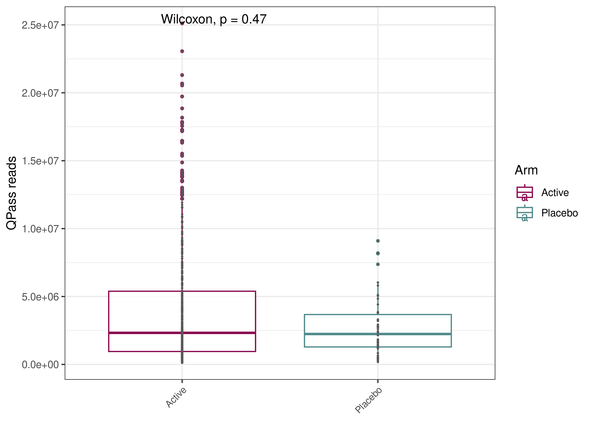

CHIR HIV RV306 Vaginal - Quality Control
Francesc Català-Moll & Oriol Careta Borràs
2024-06-04
Last updated: 2024-06-04
Checks: 7 0
Knit directory: OriolGEM.github.io/
This reproducible R Markdown analysis was created with workflowr (version 1.7.1). The Checks tab describes the reproducibility checks that were applied when the results were created. The Past versions tab lists the development history.
Great! Since the R Markdown file has been committed to the Git repository, you know the exact version of the code that produced these results.
Great job! The global environment was empty. Objects defined in the global environment can affect the analysis in your R Markdown file in unknown ways. For reproduciblity it’s best to always run the code in an empty environment.
The command set.seed(20240321) was run prior to running
the code in the R Markdown file. Setting a seed ensures that any results
that rely on randomness, e.g. subsampling or permutations, are
reproducible.
Great job! Recording the operating system, R version, and package versions is critical for reproducibility.
Nice! There were no cached chunks for this analysis, so you can be confident that you successfully produced the results during this run.
Great job! Using relative paths to the files within your workflowr project makes it easier to run your code on other machines.
Great! You are using Git for version control. Tracking code development and connecting the code version to the results is critical for reproducibility.
The results in this page were generated with repository version 64c7378. See the Past versions tab to see a history of the changes made to the R Markdown and HTML files.
Note that you need to be careful to ensure that all relevant files for
the analysis have been committed to Git prior to generating the results
(you can use wflow_publish or
wflow_git_commit). workflowr only checks the R Markdown
file, but you know if there are other scripts or data files that it
depends on. Below is the status of the Git repository when the results
were generated:
Ignored files:
Ignored: .Rhistory
Ignored: .Rproj.user/
Ignored: code/.RData
Ignored: code/.Rhistory
Ignored: data/
Note that any generated files, e.g. HTML, png, CSS, etc., are not included in this status report because it is ok for generated content to have uncommitted changes.
These are the previous versions of the repository in which changes were
made to the R Markdown (analysis/009_quality_control.Rmd)
and HTML (docs/009_quality_control.html) files. If you’ve
configured a remote Git repository (see ?wflow_git_remote),
click on the hyperlinks in the table below to view the files as they
were in that past version.
| File | Version | Author | Date | Message |
|---|---|---|---|---|
| Rmd | e36d2e8 | OriolGEM | 2024-06-03 | update |
| html | e36d2e8 | OriolGEM | 2024-06-03 | update |
Introduction
We are interested in a general description of the dataset in terms quality control and also of microbiome composition and function. We are using all available samples (481) from all patients (118).
Load mre
## mre init & filter
mre <- readr::read_rds(here::here("data", "preprocessed", "mre.rds"))QC
## def vars
bucket <- "s3://cihr-hiv-rv306"
filt_data_obj <- "vaginal/metagenome/WMGS/RawData/DataFiltering_Boxplot.rds"
## load seq analysis data
df <-
aws.s3::s3readRDS(filt_data_obj, bucket) %>%
.[[1]] %>%
tibble::as_tibble()
# generate metadataDF from mre
metadataDF <- data.frame(mre@metadata@metadata_df)
# plot longitudinal sampling per each Arm
metadataDF$Collection_date <- as.Date(metadataDF$Collection_date)
ggplot(metadataDF, aes(x = Collection_date, y = PatientID, color = Treatment_group_1, shape = Arm)) +
geom_point(size = 1.5) +
geom_line() +
labs(x = "Date", y = "ID") +
scale_shape_manual(name = 'Arm', values = c('Placebo' = 1, 'Active' = 2)) +
theme(axis.text.x = element_text(angle = 45, hjust = 1))
| Version | Author | Date |
|---|---|---|
| e36d2e8 | OriolGEM | 2024-06-03 |
The dates of the collection of each sample can be seen here. It can be seen that depending on the treatment group, samples were collected at different time-points.
con1 <- table(metadataDF$Medical_center, metadataDF$Visit_Week)
addmargins(con1)#>
#> Wk 0 Wk 14 Wk 26 Wk 50 Wk 62 Wk 74 Sum
#> AAA 109 104 100 99 18 14 444
#> MUW 9 9 9 9 1 0 37
#> Sum 118 113 109 108 19 14 481# Create a ggplot object
p <- ggplot(metadataDF, aes(x = Visit_Week, fill = Medical_center)) +
geom_bar(position = "dodge") +
facet_wrap(~ Arm) +
labs(title = "Histogram of Medical Center Visits by Week",
x = "Visit Week",
y = "Number of patients") +
scale_fill_manual(values = c("deeppink4", "darkslategray4")) +
theme_minimal() +
theme(panel.grid.major = element_blank(),
panel.grid.minor = element_blank())
p
| Version | Author | Date |
|---|---|---|
| e36d2e8 | OriolGEM | 2024-06-03 |
We can also see the number of patient’s samples extracted each week, separated by medical center. There is a drop in number of patient’s samples extracted between week 50 and week 62, because groups 1, 2 and 3 had samples taken only up until week 50. We can also observe that there are very few patients on the placebo arm.
# filter seq analysis data
sub_df <- dplyr::filter(df, SampleID %in% metadataDF$SampleID)
# dcast sub_df and merge with metadata
sub_df_dcast <- reshape2::dcast(sub_df, SampleID ~ Step, value.var = "value")
all_df <- base::merge(metadataDF, sub_df_dcast, by = "SampleID")
all_df$Visit_Week <- gsub('Wk ', 'wk', all_df$Visit_Week)
all_df$Concentration_ng_ul[all_df$Concentration_ng_ul == 10000.0] <- 100
all_df2 <-
all_df %>% dplyr::select(
SampleID,
PatientID,
Visit_Week,
Arm,
QFailReads,
Human,
QPassReads
)
# melt df_all
all_df_melt <- reshape2::melt(all_df2)
# barplot
ggplot(all_df_melt, aes(x = SampleID, y = value, fill = variable)) +
geom_bar(stat = "identity") +
ylab("PE reads") +
theme_bw() +
scale_fill_manual(values = c("azure3", "darkslateblue", "yellow")) +
theme(
axis.text.x = element_text(angle = 45, hjust = 1, size = 3),
axis.title.x = element_blank()
)
| Version | Author | Date |
|---|---|---|
| e36d2e8 | OriolGEM | 2024-06-03 |
Here we can see the total number of pair-ended reads (PE reads) of each sample separated by QFail reads, QPass reads and Human reads.
QFail reads: These are sequencing reads that have failed quality control (QC) metrics or filters during the sequencing process. This could be due to low sequencing quality, adapter contamination, or other technical issues.
QPass reads: These are sequencing reads that have passed quality control metrics and are considered to meet the quality standards set for the sequencing run.
Human reads: These are sequencing reads that have passed quality control metrics and align to the human genome.
# Summary QPass N reads
x <- summary(all_df$QPassReads)
x#> Min. 1st Qu. Median Mean 3rd Qu. Max.
#> 117462 973315 2323862 4018564 5110044 25110552The summary statics of the QPass reads can be seen here. Quality pass reads are low with a mean value of approximately 4M reads but a median value of around 2M.
# plot qPass reads for each arm
ggplot(all_df, aes(x = reorder(PatientID, +QPassReads), y = QPassReads)) +
geom_bar(aes(fill = Arm), stat = "identity") +
ylab("QPass reads") +
facet_wrap( ~ Visit_Week) +
scale_fill_manual(values = c("azure3", "darkslateblue")) +
theme_bw() +
theme(
axis.text.x = element_text(angle = 45, hjust = 1, size = 3),
axis.title.x = element_blank()
)
| Version | Author | Date |
|---|---|---|
| e36d2e8 | OriolGEM | 2024-06-03 |
Here we can see the total number of QPass reads depending if they belong to the active or placebo arm, separated by time-point. The number of QPass reads is very variable among samples but it does not seem that there is any correlation between the number of QPass reads and time-point or arm.
ggplot(all_df, aes(x = Arm, y = QPassReads, color = Arm)) +
geom_boxplot(size = 0.5, outlier.size = 0.9, alpha = 0.8) +
geom_point(size = 0.3, color = "gray35") +
ylab("QPass reads") +
scale_fill_manual(values = c("snow")) +
scale_color_manual(values = c("deeppink4", "darkslategray4")) +
theme_bw() +
theme(
axis.text.x = element_text(angle = 45, hjust = 1, size = 8),
axis.title.x = element_blank()
) +
ggpubr::stat_compare_means()
| Version | Author | Date |
|---|---|---|
| e36d2e8 | OriolGEM | 2024-06-03 |
Here we can see the total number of QPass reads depending if they belong to the active or placebo group, there are no differences between groups.
# correlation DNA concentration and final N reads
ggpubr::ggscatter(
all_df,
y = "Concentration_ng_ul",
x = "QPassReads",
color = "blue",
size = 2,
add = "reg.line",
conf.int = TRUE,
cor.coef = FALSE,
cor.method = "spearman",
add.params = list(color = "gray25", fill = "gray75"),
# Customize reg. line
ylab = "DNA",
xlab = "QPass reads"
) +
ggpubr::stat_cor(method = "spearman", label.x = 0, label.y = 150)
| Version | Author | Date |
|---|---|---|
| e36d2e8 | OriolGEM | 2024-06-03 |
Here we can see a scatter plot on the DNA concentration against the number of QPass reads. The spearmann correlation indicates that there is some negative correlation between the DNA concentration and the number of reads that have passed the QC control. At higher DNA concentration, less number of QPass reads. This is because a higher DNA concentration is most of the times due to the presence of contamination.
## Plot absolute
df %>%
ggplot(aes(SampleID, value, fill = Step)) +
geom_bar(position = "stack", stat = "identity", alpha = 0.8, colour = 0.0, width = 0.8) +
scale_fill_brewer(palette = "Set1") +
theme_minimal() +
theme(axis.text.x = element_blank())
| Version | Author | Date |
|---|---|---|
| e36d2e8 | OriolGEM | 2024-06-03 |
Here we can see the total number of pair-ended reads (PE reads) of each sample separated by QFail reads, QPass reads and Human reads. Samples appear ordered depending on the amount of Qpass reads. This plot is useful to determine a threshold of QPass reads to determine which samples to use on posterior analyses. The proposal now is a minimum number of 100,000 QPass reads per sample.
It has been suggested by bibliography that it is best to perform a cutoff of the samples where the max number of mapped reads are less than 100,000. I we do so, we lose 7 samples:
mre@diversity@virgo@dataTable %>%
dplyr::group_by(SampleID) %>%
dplyr::summarise(NumberMappedReads = max(NumberMappedReads)) %>%
dplyr::filter(NumberMappedReads < 100000)#> # A tibble: 7 × 2
#> SampleID NumberMappedReads
#> <chr> <int>
#> 1 S014117 54803
#> 2 S014196 58423
#> 3 S014255 63120
#> 4 S014264 84807
#> 5 S014287 60104
#> 6 S014288 78139
#> 7 S014521 53695selected_samples <- c("S014117", "S014196", "S014255", "S014264", "S014287", "S014288", "S014521")
df %>%
ggplot(aes(SampleID, value, fill = Step)) +
geom_bar(position = "stack", stat = "identity", alpha = 0.8, colour = 0.0, width = 0.8) +
scale_fill_brewer(palette = "Set1") +
theme_minimal() +
theme(axis.text.x = element_blank()) +
geom_point(data = subset(df, SampleID %in% selected_samples), aes(SampleID, value), shape = 21, fill = "red", color = "black", size = 1, show.legend = FALSE)
| Version | Author | Date |
|---|---|---|
| e36d2e8 | OriolGEM | 2024-06-03 |
## Plot relative
df %>%
ggplot(aes(SampleID, value, fill = Step)) +
geom_bar(position = "fill", stat = "identity", alpha = 0.8, colour = 0.0) +
scale_fill_brewer(palette = "Set1") +
theme_minimal() +
theme(axis.text.x = element_blank())
| Version | Author | Date |
|---|---|---|
| e36d2e8 | OriolGEM | 2024-06-03 |
Here we can see the relative number of pair-ended reads (PE reads) of each sample separated by QFail reads, QPass reads and Human reads. Samples appear ordered depending on the total amount of Qpass reads.
sessionInfo()#> R version 4.1.2 (2021-11-01)
#> Platform: x86_64-pc-linux-gnu (64-bit)
#> Running under: Ubuntu 22.04.4 LTS
#>
#> Matrix products: default
#> BLAS: /usr/lib/x86_64-linux-gnu/openblas-pthread/libblas.so.3
#> LAPACK: /usr/lib/x86_64-linux-gnu/openblas-pthread/libopenblasp-r0.3.20.so
#>
#> locale:
#> [1] LC_CTYPE=en_US.UTF-8 LC_NUMERIC=C
#> [3] LC_TIME=es_ES.UTF-8 LC_COLLATE=en_US.UTF-8
#> [5] LC_MONETARY=es_ES.UTF-8 LC_MESSAGES=en_US.UTF-8
#> [7] LC_PAPER=es_ES.UTF-8 LC_NAME=C
#> [9] LC_ADDRESS=C LC_TELEPHONE=C
#> [11] LC_MEASUREMENT=es_ES.UTF-8 LC_IDENTIFICATION=C
#>
#> attached base packages:
#> [1] stats graphics grDevices utils datasets methods base
#>
#> other attached packages:
#> [1] ggplot2_3.5.1 magrittr_2.0.3
#>
#> loaded via a namespace (and not attached):
#> [1] utf8_1.2.4 tidyselect_1.2.1
#> [3] RSQLite_2.3.6 AnnotationDbi_1.56.2
#> [5] htmlwidgets_1.6.4 grid_4.1.2
#> [7] BiocParallel_1.28.3 aws.signature_0.6.0
#> [9] pROC_1.18.5 munsell_0.5.1
#> [11] codetools_0.2-20 effectsize_0.8.8
#> [13] withr_3.0.0 colorspace_2.1-0
#> [15] Biobase_2.54.0 phyloseq_1.38.0
#> [17] highr_0.10 knitr_1.46
#> [19] rstudioapi_0.16.0 stats4_4.1.2
#> [21] ggsignif_0.6.4 ggside_0.3.1
#> [23] labeling_0.4.3 MatrixGenerics_1.6.0
#> [25] git2r_0.33.0 GenomeInfoDbData_1.2.7
#> [27] polyclip_1.10-6 bit64_4.0.5
#> [29] farver_2.1.2 datawizard_0.10.0
#> [31] rhdf5_2.38.1 rprojroot_2.0.4
#> [33] vctrs_0.6.5 generics_0.1.3
#> [35] TH.data_1.1-2 xfun_0.44
#> [37] R6_2.5.1 doParallel_1.0.17
#> [39] GenomeInfoDb_1.30.1 clue_0.3-65
#> [41] locfit_1.5-9.9 bitops_1.0-7
#> [43] rhdf5filters_1.6.0 cachem_1.1.0
#> [45] DelayedArray_0.20.0 promises_1.3.0
#> [47] scales_1.3.0 multcomp_1.4-25
#> [49] gtable_0.3.5 sandwich_3.1-0
#> [51] workflowr_1.7.1 rlang_1.1.3
#> [53] zeallot_0.1.0 genefilter_1.76.0
#> [55] GlobalOptions_0.1.2 splines_4.1.2
#> [57] rstatix_0.7.2 lazyeval_0.2.2
#> [59] broom_1.0.6 yaml_2.3.8
#> [61] reshape2_1.4.4 abind_1.4-5
#> [63] backports_1.5.0 httpuv_1.6.15
#> [65] ggmosaic_0.3.3 tools_4.1.2
#> [67] jquerylib_0.1.4 biomformat_1.22.0
#> [69] selbal_0.1.0 RColorBrewer_1.1-3
#> [71] BiocGenerics_0.40.0 Rcpp_1.0.12
#> [73] plyr_1.8.9 base64enc_0.1-3
#> [75] zlibbioc_1.40.0 purrr_1.0.2
#> [77] RCurl_1.98-1.14 ggpubr_0.6.0
#> [79] GetoptLong_1.0.5 correlation_0.8.4
#> [81] S4Vectors_0.32.4 zoo_1.8-12
#> [83] SummarizedExperiment_1.24.0 ggrepel_0.9.5
#> [85] cluster_2.1.6 fs_1.6.4
#> [87] here_1.0.1 data.table_1.15.4
#> [89] RSpectra_0.16-1 circlize_0.4.16
#> [91] mvtnorm_1.2-5 whisker_0.4.1
#> [93] matrixStats_1.3.0 hms_1.1.3
#> [95] patchwork_1.2.0 evaluate_0.23
#> [97] xtable_1.8-4 XML_3.99-0.16.1
#> [99] IRanges_2.28.0 gridExtra_2.3
#> [101] shape_1.4.6.1 compiler_4.1.2
#> [103] ellipse_0.5.0 tibble_3.2.1
#> [105] ggstatsplot_0.12.3 crayon_1.5.2
#> [107] htmltools_0.5.8.1 mgcv_1.9-1
#> [109] corpcor_1.6.10 later_1.3.2
#> [111] tzdb_0.4.0 geneplotter_1.72.0
#> [113] tidyr_1.3.1 libcoin_1.0-10
#> [115] aws.s3_0.3.21 DBI_1.2.2
#> [117] tweenr_2.0.3 ComplexHeatmap_2.18.0
#> [119] MASS_7.3-60.0.1 Matrix_1.3-4
#> [121] ade4_1.7-22 car_3.1-2
#> [123] readr_2.1.5 permute_0.9-7
#> [125] cli_3.6.2 parallel_4.1.2
#> [127] insight_0.19.11 igraph_2.0.3
#> [129] GenomicRanges_1.46.1 pkgconfig_2.0.3
#> [131] metar_0.1.5 statsExpressions_1.5.4
#> [133] coin_1.4-3 plotly_4.10.4
#> [135] xml2_1.3.6 paletteer_1.6.0
#> [137] foreach_1.5.2 rARPACK_0.11-0
#> [139] annotate_1.72.0 bslib_0.7.0
#> [141] multtest_2.50.0 XVector_0.34.0
#> [143] stringr_1.5.1 digest_0.6.35
#> [145] parameters_0.21.7 vegan_2.6-6.1
#> [147] Biostrings_2.62.0 rmarkdown_2.27
#> [149] curl_5.2.1 modeltools_0.2-23
#> [151] rjson_0.2.21 lifecycle_1.0.4
#> [153] nlme_3.1-164 jsonlite_1.8.8
#> [155] Rhdf5lib_1.16.0 carData_3.0-5
#> [157] mixOmics_6.18.1 viridisLite_0.4.2
#> [159] fansi_1.0.6 pillar_1.9.0
#> [161] lattice_0.22-6 KEGGREST_1.34.0
#> [163] fastmap_1.2.0 httr_1.4.7
#> [165] survival_3.6-4 glue_1.7.0
#> [167] bayestestR_0.13.2 png_0.1-8
#> [169] iterators_1.0.14 bit_4.0.5
#> [171] ggforce_0.4.2 stringi_1.8.4
#> [173] sass_0.4.9 blob_1.2.4
#> [175] rematch2_2.1.2 DESeq2_1.34.0
#> [177] lefser_1.4.0 memoise_2.0.1
#> [179] dplyr_1.1.4 ape_5.8